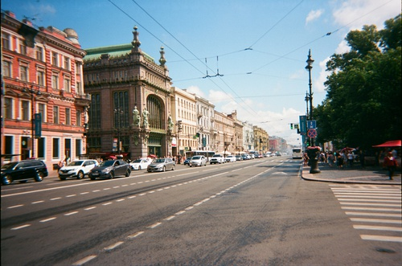

The purpose of this event is to provide a forum for early-career mathematicians working in and around multisymplectic geometry to share their research.
date: 13 July, 2021
time: 12:00 UTC
|
Roberto Rubio (Universitat de Barcelona)
Complex Dirac Structures: Invariants and local structure Generalized complex structures encompass symplectic and complex geometry on an 2m-dimensional manifold M. Their main invariant is the type, a function on M that describes where the structure is equivalent to a symplectic (type 0) or a complex (type m) structure. Submanifolds of a generalized complex manifold are not necessarily generalized complex, but carry a complex Dirac structure. After recalling the main definitions, I will introduce the order and a normalized version of the type for complex Dirac structures, which, together with the real index, describe complex Dirac structures pointwise. I will then comment on the structures encompassed by complex Dirac structures and mention a splitting theorem. This is joint work with D. Aguero (arXiv:2105.05265). |
|
|
Marine Fontaine (University of Antwerp)
Braids and carousel solutions of the N-body problem The N-body problem of celestial mechanics is an initial value problem for ordinary differential equations that governs the motion of celestial bodies interacting with each other according to Newton's law of gravitation. I will discuss some relative periodic solutions in the planar case that we call carousels. The construction is based on the cabling operation on braids of C. Moore: start with n bodies moving close to a central configuration and replace each of them with the center of mass of a cluster of bodies that themselves move close to a 'small' central configuration. The total number N equals the number of bodies in the n clusters. The proof relies on blow-up techniques for variational methods. This is based on joint work with Carlos García-Azpeitia. |
|
|
Oğul Esen (Gebze Technical University)
De Donder Form for Second Order Gravity It will be shown that the De Donder form for second order gravity, defined in terms of Ostrogradski's version of the Legendre transformation applied to all independent variables, is globally defined by its local coordinate descriptions. |
|
|
Tom McClain (Washington and Lewis University)
Geometric quantization with polysymplectic structures? In this talk I will discuss ongoing attempts to use the polysymplectic structures from this paper to produce a simple geometric quantization procedure based on the earliest (and simplest) Kostant-Souriau quantization maps. I will give an overview of the current status of the project, highlighting challenges, obstacles, and opportunities for collaboration. |
|
|
Casey Blacker (Euler International Mathematical Institute and Saint Petersburg State University)
Quantization of polysymplectic manifolds Geometric quantization is a method for taking a symplectic manifold and returning a complex Hilbert space. If the symplectic manifold is equipped with the structure of a Hamiltonian G-space, then the Hilbert space inherits a unitary representation of G. A polysymplectic manifold is a smooth manifold equipped with a symplectic structure taking values in a fixed vector space. In this talk, I will briefly review geometric prequantization and introduce an extension to the setting of polysymplectic manifolds. |
|
|
Leonid Ryvkin (Georg-August-Universität Göttingen)
Local normal forms of multisymplectic manifolds? Two main features of symplectic manifolds are their large symmetry groups and the existence of local standard forms (Darboux theorem). In this talk, we will explore the situation in the multisymplectic setting, giving a few very partial results and very open questions. |
|
|
Antonio Miti (Università Cattolica del Sacro Cuore & KU Leuven)
Gauge transformations of multisymplectic manifolds and L-infinity observables Multisimplectic manifolds are a simple generalization of symplectic manifolds where closed non-degenerate k-forms are considered in place of 2-forms. A natural theme that raises when dealing with both symplectic and multisymplectic structures is to investigate what relationship exists between gauge-related multisymplectic manifolds, i.e. endowed with multisymplectic forms lying in the same cohomology class. In this talk, we will focus on the L-infinity algebras of observables associated to a pair of gauge related manifold. To date, no canonical correspondence is known between two gauge-related observables algebras. However, we will be able to exhibit a compatibility relation between those observables that are momenta of corresponding homotopy moment maps (the higher analogue of a moment map in the multisymplectic setting). Although this construction is essentially algebraic in nature, it admits also a geometric interpretation when declined to the particular caseof pre-quantizable symplectic forms. This provides some evidence that this construction may be related to the higher analogue of geometric quantization for integral multisymplectic forms. This is ongoing joint work with Marco Zambon. |
| Çiğden Ay | Gebze Technical University |
| Casey Blacker | EIMI and Saint Petersburg State University |
| Miquel Cueca | Georg-August-Universität Göttingen |
| Ilias Ermeidis | Georg-August-Universität Göttingen |
| Oğul Esen | Gebze Technical University |
| Marine Fontaine | University of Antwerp |
| Ayten Gezici | Gebze Technical University |
| Hanife Kubra Kaya | Işık Üniversitesi |
| Tom McClain | Washington and Lee University |
| Antonio Miti | Università Cattolica del Sacro Cuore & KU Leuven |
| Jérémie Pierard de Maujouy | IMJ-PRG |
| Gülden Gün Polat | Gebze Technical University |
| Federico Rossi | Università degli Studi di Milano-Bicocca |
| Roberto Rubio | Universitat de Barcelona |
| Leonid Ryvkin | Georg-August-Universität Göttingen |
| Tilmann Wurzbacher | Institut Élie Cartan de Lorraine |
{kind=link}